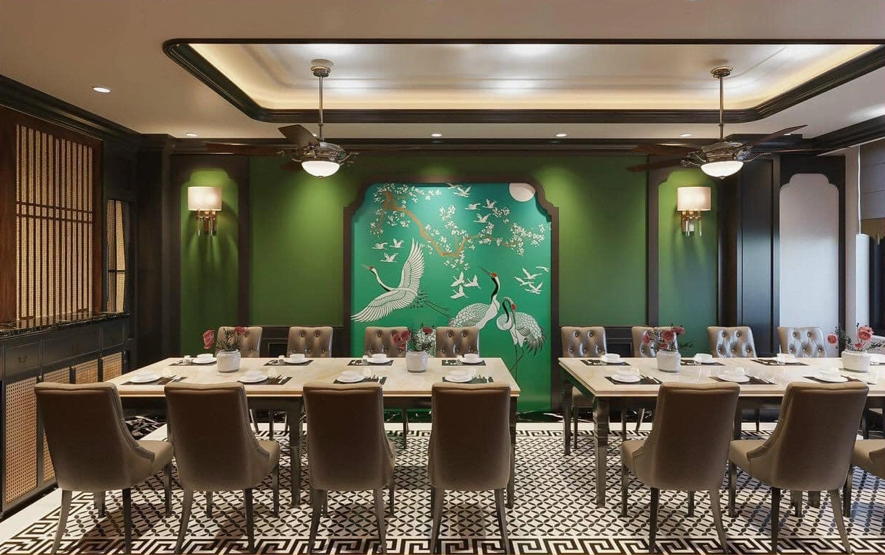
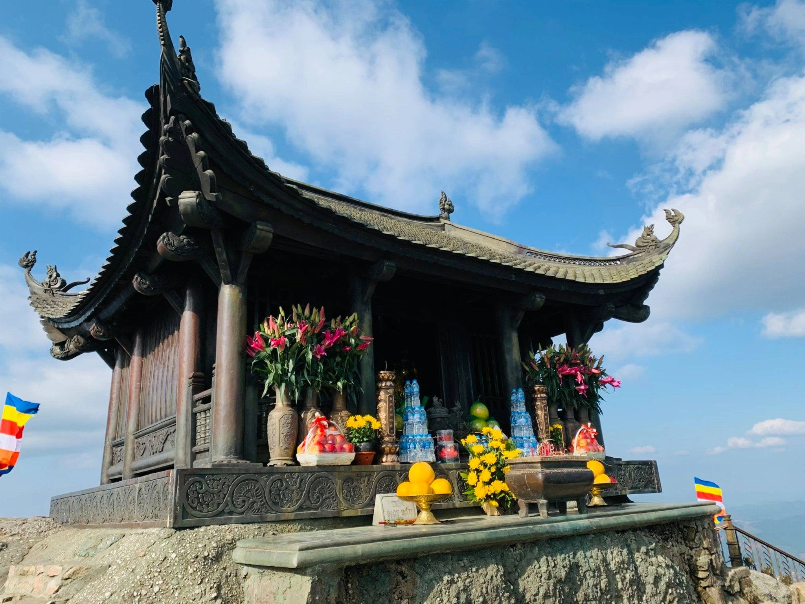

Hạ Long: Khám phá Sự đặc sắc và Cập nhật tin tức mới nhất
Hạ Long: Bí mật và Cuộc sống trong Vịnh - Khám phá và Cập nhật những tin tức hấp dẫn từ điểm đến tuyệt
vời này.


Top 3 nhà hàng ngon và nổi tiếng ở Hạ Long
TOP ĐẶC SẢN QUẢNG NINH NỔI TIẾNG

Khám phá 3 ngôi chùa ở Quảng Ninh
5 địa điểm check in Viral khi đến Hạ Long
Điểm điểm khi du lịch ở Vịnh Hạ Long
Top 5 quán cafe view đẹp ở Hạ Long
Thời điểm nên đi du lịch Hạ Long
Top món ăn nên thưởng thức tại vịnh Hạ Long
Khu giải trí Sun World Hạ Long Park có gì?